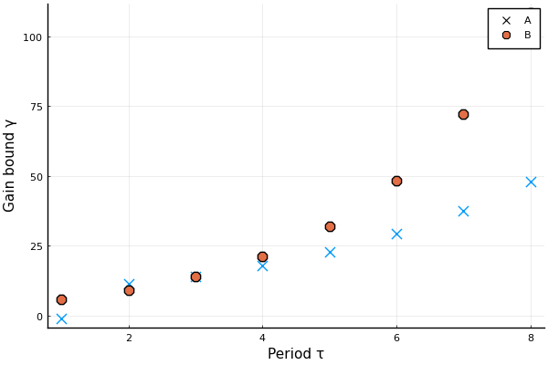

State-Feedback Delayed Integrator Example
We will study two instances of the first-order delayed integrator where the gain has unknown sign
\[y_t = y_{t-1} + iu_{t-2} + v_{t-1},\]
where $i = \pm 1$. By storing the previous input signal, we can design state-feedback controllers. Consider the two implementations
\[\begin{aligned} x_{t+1} & = \underbrace{\begin{bmatrix} 1 & i \\ 0 & 0 \end{bmatrix}}_{A_i} x_t + \underbrace{\begin{bmatrix} 0 \\ 1 \end{bmatrix}}_{B} \\ x_{t+1} & = \underbrace{\begin{bmatrix} 1 & 1 \\ 0 & 0 \end{bmatrix}}_{A} x_t + \underbrace{\begin{bmatrix} 0 \\ i \end{bmatrix}}_{B_i} \end{aligned} \]
We will refer to these models as $A_i$ and $B_i$ respectively. In the $B_i$ model, the sign of the gain is revealed immediately upon applying the control signal, while in $A_i$ the uncertainty is revealed through the delayed effect on the first state. We will proceed to design minimax adaptive controllers with periodic switching for these two systems, and compare the gain bounds.
Prerequisites
Load the following packages
using MinimaxAdaptiveControl
using LinearAlgebra
using JuMP
using Plots
using Clarabel # Optimization solverWe are using Clarabel.jl, but any SDP solver JuMP.jl will do. See the following list.
We define an auxillary function to pass the optimizer_factory to JuMP's Model constructor. Just substitute this with whatever solver you want to use.
optimizer_factory=() -> Hypatia.OptimizerState-feedback models
We will define $A_i$ and $B_i$ as vectors, eaching containing two SSLinMod objects.
# Define Ai system
A1 = [1. 1; 0 0]
A2 = [1. -1; 0 0]
B0 = [0 1.]'
Q = [1.0 0; 0 1.0]
R = fill(1.0,1,1)
sys1 = SSLinMod(A1, B0, Q, R)
sys2 = SSLinMod(A2, B0, Q, R)
syssAi = [sys1, sys2]
# Define Bi system
A0 = [1. 1; 0 0]
B0 = [0 1.]'
sys3 = SSLinMod(A0, B0, Q, R)
sys4 = SSLinMod(A0, -B0, Q, R)
syssBi = [sys3, sys4]Bisection
The procedure for synthesizing controllers depends on a candidate $\ell_2$-gain level $\gamma$. In order to find the smallest $\gamma$, we will use bisection. We construct this bisection in two parts. The function attemptMACLMIs(syss, γ, T) takes a vector of systems, performs the reduction with reduceSys and attempts to solve the periodic bellman inequality LMIs with period T using MACLMIs.
function attemptMACLMIs(syss, γ, T)
N = length(syss)
models = [Model(optimizer_factory()) for i = 1:N]
set_silent.(models)
(A, B, G, Ks, Hs) = reduceSys(syss, γ, models)
model = Model(optimizer_factory())
set_silent(model)
Ps0, Psplus= MACLMIs(A, B, G, Ks, Hs, T, model)
return termination_status(model)
endNext, we implement a bisection algorithm to find the smallest $\gamma$ for which we can solve the LMIs.
Some solvers can run into numerical issues when $\gamma$ or the period becomes large.
function bisect(syss, fun, T; gammamin = 1.0, gammamax = 500.0, tol = 1e-3)
γmin = gammamin
γmax = gammamax
if fun(syss, gammamax, T) != MOI.OPTIMAL
error("gammamax is not feasible")
end
while γmax - γmin > tol
γ = (γmin + γmax) / 2
if fun(syss, γ, T) == MOI.OPTIMAL
γmax = γ
else
γmin = γ
end
end
return γmax
endResults
We run the bisection algorithm for the two systems with periods from $1$ to $8$, setting $\gamma = -1$ if the optimization problem is infeasible.
Tmax = 8
gammamins = zeros(Tmax, 2)
for t = 1:Tmax
try
gammamins[t, 1] = bisect(syssAi, attemptMACLMIs, t)
catch
gammamins[t, 1] = -1
end
try
gammamins[t, 2] = bisect(syssBi, attemptMACLMIs, t)
catch
gammamins[t, 2] = -1
end
endThe resulting gain-bounds are
| Period | $\gamma_{A_i}$ | $\gamma_{B_i}$ |
|---|---|---|
| 1 | -1 | 5.8 |
| 2 | 11.2 | 9.2 |
| 3 | 13.9 | 14.0 |
| 4 | 17.8 | 21.3 |
| 5 | 22.7 | 32.0 |
| 6 | 29.2 | 48.1 |
| 7 | 37.4 | 72.3 |
| 8 | 48.0 | 108.5 |
We can plot them nicely using e.g. PyPlot.
pyplot()
plot(
gammamins,
seriestype=:scatter,
marker=[:x :o],
markersize = 8,
label = ["A" "B"],
xlabel = "Period τ",
ylabel = "Gain bound γ"
)